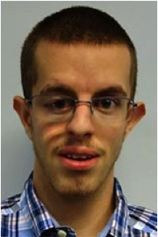
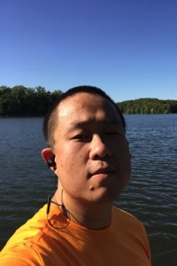

Alumni
Nana Awuku
Position: Research Technician
About Me:
B.S. University of Georgia

Samuel Arsenault
Position:
Graduate Student
About Me:
B.S. University of Georgia
Advisor: Brendan Hunt
Co-Advisor: Bob Schmitz

Sohyun Bang
Position: Graduate Student - Institute of Bioinformatics
About Me:
M.S. Seoul National University
B.S. Sookmyung Women's University
Google Scholar
Adam Bewick
Position: Postdoctoral Fellow
About Me:
Ph.D. McMaster University
B.Sc. Laurentian University
B.Ed. Laurentian University
Current Position:
Native Trait Genomics Scientist, Bayer, Inc.
Google Scholar
Ramesh Bondada
Position:
Postdoctoral Fellow
About Me:
Ph.D. IISER-TVM
M.S. Andhra University
B.S. Andhra University
Current Position:
Postdoctoral Researcher, West Virginia State University
Google Scholar
Erin Campbell
Position: Research Technician
About Me:
B.S. University of Georgia
Kitra Cates
Position: Research Technician
About Me:
B.S. Genetics, University of Georgia
Current Position:
Graduate Student, Division of Biological and Biomedical Sciences, Washington University
Tyler Earp
Position: Research Technician
About Me:
B.S. Penn State University
Tina Ethridge
Position: Research Technician
About Me:
B.S. University of Georgia
Patrick Thomas Griffin
Position:
Research Technician
About Me:
B.S. University of Georgia
Current Position:
Graduate Student, Biological and Biomedical Sciences, Harvard
Hannah Houston
Position: Research Technician
About Me:
B.S. Appalachian State University
Brigitte Hofmeister
Position:
Graduate Student - Institute of Bioinformatics
About Me:
B.S. Bucknell University
Current Position:
Software Engineer, Pairwise
Google Scholar

Hosung Jang
Position:
Postdoctoral Fellow
About Me:
Ph.D. Seoul National University
M.S. Seoul National University
B.S. Seoul National University
Google Scholar
Lexiang Ji
Position: Graduate Student - Institute of Bioinformatics
About Me:
M.S. Beijing Forestry University
B.S. Zhejiang A&F University
Current Position:
Senior Expert I (Data Science), Novartis
Google Scholar

William Jordan
Position:
Graduate Student
About Me:
B.S. Hofstra University
Current Position:
Assay Scientist, Illumina Inc.
Google Scholar
Ying-Zhen Kong
Position:
Research Professional
About Me:
Ph.D. Lanzhou University
Amanda Kelly Lane
Position:
Graduate Student
About Me:
B.S., B.A. Washington and Lee University
Yolanda Lay
Position:
Laboratory Technician
Zefu Lu
Position:
NSF NPGI Postdoctoral Fellow
About Me:
Ph.D. Indiana University
M.S. Oklahoma State University
B.S. University of Oklahoma
Current Position:
Associate Professor, Institute of Crop Science, Chinese Academy of Agricultural Sciences
Alex Marand
Position:
NSF NPGI Postdoctoral Fellow
About Me:
Ph.D. University of Wisconsin
B.S. Virginia Polytechnic Institute and State University
Current Position:
Assistant Professor, University of Michigan
Google Scholar
Pablo Mendieta
Position:
Postdoctoral Fellow
About Me:
Ph.D. Genetics, University of Georgia
B.S. University of Colorado, Boulder
Google Scholar
Andrew Murray
Position:
Graduate Student - Plant Biology
About Me:
B.A. Appalachian State University
B.S. Appalachian State University
Drexel Neumann
Position:
Research Technician
About Me:
B.S. University of Georgia
Current Position:
Medical Student, Cornell University
Chad Niederhuth
Position:
NSF NPGI Postdoctoral Fellow
About Me:
Ph.D. University of Missouri
B.S. Iowa State University
Current Position:
Assistant Professor,
Michigan State University
James Parker
Position: Research Technician
About Me:
B.S. College of Charleston
Pedro Augusto Braga dos Reis
Position:
Postdoctoral Associate
About Me:
Ph. D. Federal University of Vicosa
M.S. Federal University of Vicosa
B.S. Federal University of Vicosa
Current Position:
Adjunct Professor, Federal University of Vicosa
Nick Rohr
Position: Research Technician
About Me:
B.S. Texas Tech University
Current Position: Lab Manager, Texas Tech University
Sarah Saddoris
Position:
Research Technician
About Me:
B.S. University of Georgia (in progress)
Xiuling Shi
Position: Postdoctoral Fellow
About Me:
Ph.D. Auburn University
M.S. Institute of Botany,
Chinese Academy of Sciences
B.S. Huazhong Agriculture University
Current Position:
Assistant Professor, Corban University
Google Scholar
Mark Urich
Ankit Vaghela
Position: Graduate Assistant - Computer Science
About Me:
B.S. Nirma University, India
Jered Wendte
Position:
NSF NPGI Postdoctoral Fellow
About Me:
Ph.D. Indiana University
M.S. Oklahoma State University
B.S. University of Oklahoma
Current Position:
Senior Scientist, MRI Global

Rui Xiao
Position:
Graduate Student - Institute of Bioinformatics
About Me:
M.S. Southern Illinois University
B.S. University of Oregon
Rafi Yaari
Position:
BARD Postdoctoral Fellow
About Me:
Ph.D. Tel-Aviv University
M.S. Tel-Aviv University
B.S. Tel-Aviv University
Haidong Yan
Position:
Postdoctoral Fellow
About Me:
Ph.D. Virginia Tech. University
M.S. Sichuan Agricultural University
B.S. Sichuan Agricultural University
Current Position: Associate Professor, Sichuan Agricultural University
Google Scholar
Yinwen Zhang
Position:
Graduate Student - Institute of Bioinformatics
About Me:
M.S. Northwest A&F University
B.S. Northwest A&F University
Former Undergraduate Researchers
Jiye Bae
Nisha Bhat
Chloe Dela Cerna
Michael Collins


Kelsey Cunningham
Sidarth Lingatlu
Kelly Luo
Joshua Mishkin

Nathalie Murphy
Kaitlyn Nguyen
Suyoung (Judy) Oh
Anthony Rizzo

Sealtiel Ortega-Rodriguez
Callan Russell
Zachary Sanchez
Madeline Steffensen
Madge Stuhlreyer
Aryan Thakur
Tejal Pankaj Vashi
Ryan Ward
Jacob Yaeger